本平台完整涵蓋原 30 頁提案簡報圖面與數據，並依據業務第一線情報新增 【Part 1：客戶五大想法與 MEDDIC 高層銷售策略】 及 【Part 3：資深光伏顧問五大疑問精算解答 ＆ 董事長五大採購決策指南】。全面拉齊「方案一：出租分潤（774.745 kW）」與「方案二：鉅鋼自建（612.320 kW）」之 DCF 折現財務基準（NPV / IRR / 回收期 / ±10% 電價敏感度），協助董事長一頁拍板最適方案！
解構業務第一線 5 點情報：① 窗口請我們跟高層直接對話（自建&出租皆考慮）、② D棟退縮2米不加欄杆浪板方案、③ 出租中途回購方案、④ C棟露台17kW主動勸退、⑤ 進能服簡介放最後預備。
完整呈現 D 棟主屋頂與 C1/C2 屋突（151.745kW）施作範圍、方案一出租（774.745kW，建坤能源）與 20 年回購表、方案二自建（612.32kW 含浪板）、CSI 445W 模組、華為/亞力逆變器與 C 棟露台評估。
正面回答資深顧問 5 大疑問（比較基準拉齊 NPV/IRR、3.5h PVsyst 與 0.8% 衰減率、回購溢價與外併改內併、30% 免雜法規、租約空間條款）與董事長 5 大採購拍板題目。
首家 IPO 上櫃 EPC（資本額 5.88 億）、全台 750 MW / 348 座實績、南科 24 MW 科技廠（年省 1.35 億）與芳生螺絲 3.66 MW 實證、雲端專管與德國萊因 TÜV AAA 頂級維運肯定。
← / → 翻頁 ｜ Space 下一頁 ｜ Home 回戰情封面 ｜ F 全螢幕簡報模式| # | 業務回報與客戶現場想法 | 背後真實決策心理 (Why) | MEDDIC 對應維度與我方出招 |
|---|---|---|---|
| 1 | 窗口抓不清董事長想法，直接請我們跟高層對話；今天說自建 & 出租都有考慮 | 2,900 萬 CAPEX 動用權與未來綠電剛需僅董事長能拍板，窗口不敢代為選邊站。 | E 經濟決策者 C 內部教練 跨越傳話落差，以「統一基準雙軌儀表板」讓董事長當場二選一。 |
| 2 | 請設計排出一版「不加欄杆、棚架邊緣往內退縮 2 米」的 D 棟浪板方案供董事長評估 | 高層極度重視新廠建築外觀（討厭女兒牆外露欄杆）並希望頂樓具備防雨隔熱實用機能。 | D 決策標準 退縮 2 米免除女兒牆欄杆、減少植筋漏水點，並精算 29.03% (<30%) 合規免雜照。 |
| 3 | 客戶有考慮「出租到一半購回」，已準備 20 年逐年回購方案 | 想享 0 出資好處，但怕屋頂被綁死 20 年、未來供應鏈要求綠電時無法自用。 | D 決策標準 M 量化指標 提供「中途買回權 (Call Option)」＋「綠電優先回購權 (ROFR)」，鎖定第 8~10 年甜蜜點。 |
| 4 | C 棟露臺算出合法僅 17.6 kW 預估發電量，主動不建議客戶施作 | 全鋪可達 185kW，但合法容積僅 32 坪 (17.6kW)，雜照費卻要 170 萬元，投資必虧。 | I 痛點識別 (建立信任) 全場最強信任殺手鐧！主動替董事長砍掉雞肋工項、立省 170 萬冤枉錢。 |
| 5 | 進能服（6692）簡介與實績放最後做預備 | 董事長時間寶貴，前 20 分鐘只關心「鉅鋼的錢與屋頂」，公司介紹放後面備查即可。 | D 決策流程 倒金字塔議程：開場直奔方案與財務 QA，最後以 6692 上櫃與 TÜV AAA 壓軸背書。 |
| 向董事長請教的戰略問題 | 若董事長回答 A 傾向 | 若董事長回答 B 傾向 |
|---|---|---|
| Q1：供應鏈綠電時程 歐美品牌客戶（製鞋設備買家）未來 3 年內是否要求鉅鋼提供 RE100 或減碳憑證？ |
「已經在問／3年內必用」 → 鎖定 方案二：鉅鋼自建（100% 取得每年 78 萬度綠電＋憑證，度電價值高達 $8.8） |
「目前還沒有強制要求」 → 可選 方案一：出租收租，或方案二純節電（抵減 $5.8 電費，憑證還可外賣變現！） |
| Q2：2,900 萬資金配置 新廠落成階段，帳上 2,900 萬預算您希望全數保留給本業機台，還是配置穩定現金流資產？ |
「帳上資金充裕／可配綠能貸款」 → 鎖定 方案二：鉅鋼自建（搭配銀行製造業綠能專案融資 7~8 成，自備款僅約 600 萬！） |
「新廠資本支出大，不想動現金」 → 鎖定 方案一：建坤能源全額出資（鉅鋼 0 出資，白拿 20% 租金或綠電＋保留中途買回權） |
| Q3：D 棟頂樓空間用途 D 棟頂樓未來是否需要作為半戶外倉儲、機具暫置或員工活動空間？ |
「需要防雨遮陽半戶外空間」 → 必選 D 棟加鋪浪板＋退縮 2 米方案（淨高 3.4~3.8 米，空間使用權歸鉅鋼） |
「頂樓純閒置，不會放東西」 → 選 無浪板滿鋪方案 (623 kW)，省下 322 萬浪板費，發電容量最大化！ |
許多企業主之所以在「自建」與「出租」間猶豫，是因為誤以為自建一定要一次掏出 2,894 萬現金。顧問於會中主動提供兩大破局槓桿：
鉅鋼身為優質精密機械製造大廠，自建光電設備可申請銀行綠色專案貸款（成數約 75%~80%，利率約 2.2%~2.6%）。鉅鋼實際自備款僅約 580~720 萬元，每年光電節電效益（約 450萬~688萬元）扣除銀行本息後，第 1 年起即產生正現金流，完美兼顧「保留現金」與「獨享 100% 電廠效益」！
若董事長決定新廠初期 100% 零資本支出，則由建坤能源（國泰金控 95%＋進能服 5%）全額出資建置 774.745 kW。前 7~9 年鉅鋼零風險收租，待第 8~10 年折舊單價降至甜蜜點（$32,819~$38,786/kW）且綠電剛需明確時，再行買回自用。
針對董事長對新廠外觀、工安與頂樓空間機能的重視，設計團隊重新排佈 D 棟高棚架（460.575 kW）方案，解決三大工程痛點：
| 評估維度 | 傳統滿鋪貼齊女兒牆做法 | 本次新增「內退 2 米免欄杆＋浪板」方案 |
|---|---|---|
| 職安防墜與外觀 | 棚架貼齊女兒牆邊緣，高空維運有墜落風險，必須沿女兒牆加裝防墜欄杆，破壞新廠建築立面美觀。 | 棚架邊緣自女兒牆向內退縮 2 米，留出安全緩衝帶，利用既有女兒牆作為天然屏障，免加外圍欄杆（僅步道終止處加設防墜器與母索）。 |
| 屋頂防水與結構 | 女兒牆頂部或內側鑽孔固定欄杆，增加牆體滲水風險與迎風面風阻。 | 減少女兒牆周邊鑽孔點；棚架下滿鋪浪板，為 D 棟 RC 屋頂提供雙重防雨與隔熱降溫 3~5°C 保護。 |
| 免請領雜照合規性 *(30% 鐵律)* |
無浪板時可滿鋪 623 kW；但若滿鋪浪板卻未精算退縮比，極易超過 30% 遭建管退件。 | 精準配置 1,035 片 CSI 445W (460.575 kW)，維護通道水平投影占比 29.03% ≤ 30%，100% 符合免雜照標準！ |
2,668.23 m² － 模組總面積 2,067.93 m² (1.998×1,035片) ＝ 通道面積 600.3 m²；600.3 ÷ 2,067.93 = 29.03% < 30%。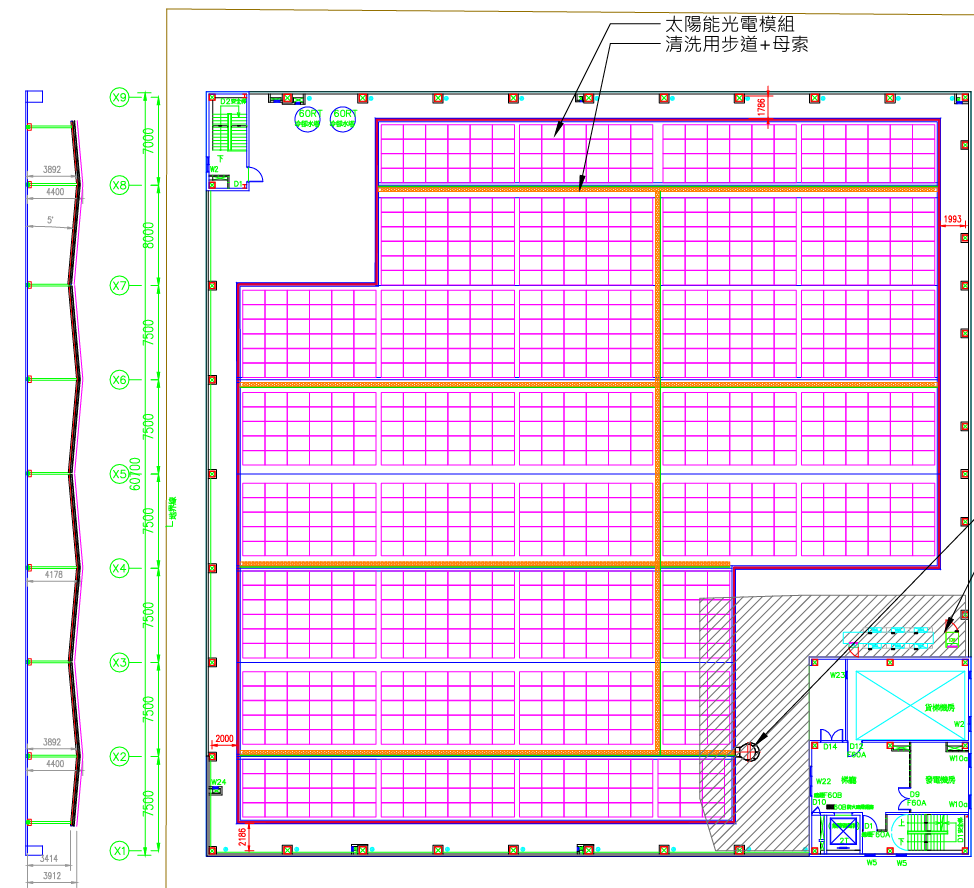
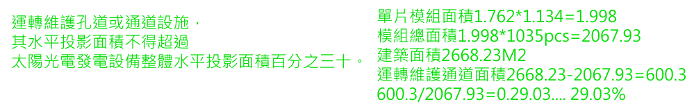
在 MEDDIC 決策心理學中，工業業主對「出租屋頂 20 年」最大的隱性恐懼是「喪失未來控制權」。準備明確的逐年回購價目表（詳見 Part 2 P.4），能立即達成三大戰略效果：
$2,983.5/kW，期中交易按日數比例分攤），讓董事長知道隨時可以把電廠買回來。$59,670/kW（總價 4,623 萬），因為包含了建坤能源前期投入的台電外線線補費、臨路 MOF 盤、高壓外併工程與 SPV 融資開發成本。我們主動告訴董事長：「若 3 年內就想買回，請直接選方案二自建（$42,000/kW）立省上千萬！但若是第 8~10 年後才因供應鏈綠電需求買回，此時回購單價已降至 $32,819~$38,786/kW（總價 2,543萬~3,005萬），且前 9 年已白領 826 萬租金，最為划算！」客戶原本詢問 C 棟 4F 露臺能否架高棚架做太陽能。我方工程與法規團隊實地檢討台中建管處規定後，把帳算得一清二楚，並主動建議董事長「絕對不要做」：
| 檢討項目 | 全平台滿鋪理想值 | 台中建管處合法容積實際值 |
|---|---|---|
| 可設置容量 | 185.12 kW | 僅 17.60 kW (合法容積僅 32 坪) |
| 20 年總發電量 | 4,386,000 度 | 僅 417,090 度 (年均僅 2.08 萬度) |
| 20 年毛發電效益 ($8.8) | 約 3,860 萬元 | 僅 367.0 萬元 ($3,670,392) |
| 建置與雜照剛性成本 | 具規模經濟可攤提 | 光雜照申請費約 170 萬元 ＋ 高棚架工程費約 133 萬 ($75,600/kW) ＋ 20年維運保險回收費 → 總成本逾 330 萬，實質零報酬！ |
傳統業務一上台先講 15 分鐘公司歷史，董事長早就失去耐性。將進能服簡介放在最後（Part 4 預備庫），完全符合頂尖管顧「結論先行、證據墊後」的高層簡報鐵律：
| 會議階段 (45分鐘) | 簡報對應章節 | 高層互動目標與心理推進 |
|---|---|---|
| 第 01~15 分鐘 *(黃金注意力期)* |
Part 2 雙軌方案總覽 (D棟+C棟屋突 vs 剔除露台) |
直奔主題：看懂新廠屋頂能裝多少、出租 (0出資) 與自建 (2,894萬) 兩套方案的空間與配置差異。 |
| 第 15~30 分鐘 *(深度交鋒決策期)* |
Part 1 & Part 3 (同基準 DCF 模型 + 5大QA + 5大決策) |
當董事長或財務長提出「投資回收期、免雜30%法規、中途回購、空間使用權」疑問時，直接切入 Part 3 精算表當場解答。 |
| 第 30~40 分鐘 *(臨門一腳信任期)* |
Part 4 進能服實績預備庫 (6692上櫃 / 750MW / 芳生案例 / TÜV AAA) |
當董事長問：「若交給你們做，施工品質跟 20 年維運誰保證？」立刻翻出 首家上櫃 6692、南科 24MW、芳生螺絲省電實證與 TÜV AAA 認證 一錘定音！ |
| 最後 5 分鐘 | Part 3 P.7 拍板核決表 | 請董事長針對 5 個採購題目勾選傾向，啟動台電併審與 PVsyst 細設！ |
Part 4 進能服簡介與實績預備 即可在 0.1 秒內調出 750MW 實績、芳生螺絲案例與 TÜV AAA 維運地圖！
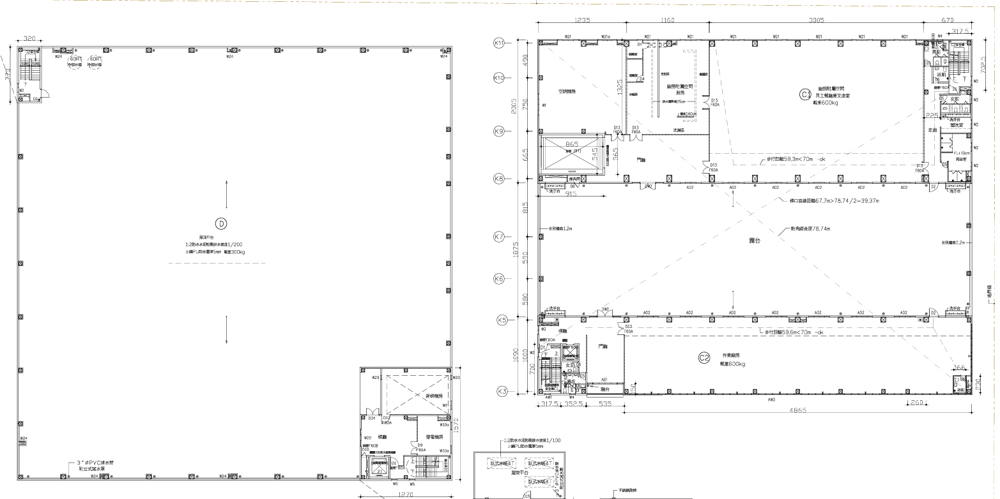
• 工程工法：RC 屋頂植筋矮棚架，單斜陣列（朝南最佳受光角）。
• 視覺美學：模組最高點僅 1.2 米 → 不高於女兒牆，完美維持鉅鋼新廠建物外觀視覺整體性！
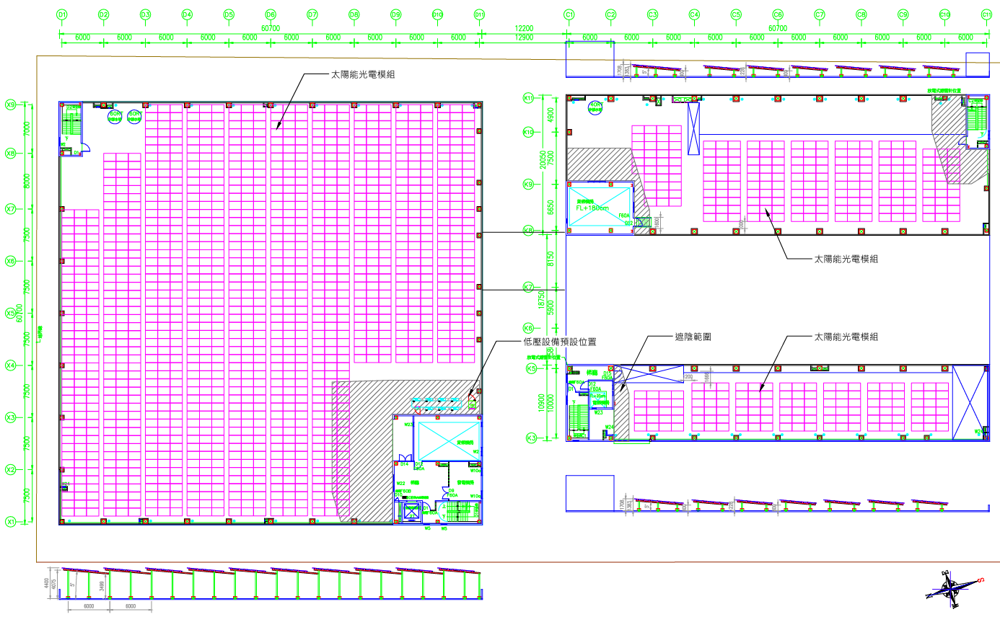
| 比較項目 | 方案一：出租分潤（建坤能源投資） | 方案二：光電自建（鉅鋼機械投資） |
|---|---|---|
| D 棟浪板配置 | 無浪板（高棚架山型陣列滿鋪） | 有浪板（棚架邊緣退縮 2 米免加欄杆，符合法規 30% 維護通道比例限制） |
| 總裝置容量 (kW) | 774.745 kW（D棟 623.0 kW ＋ C棟屋突 151.745 kW） | 612.320 kW（D棟 460.575 kW ＋ C棟屋突 151.745 kW） |
| 20 年預估總發電量 | 18,360,153 度（約 1,836 萬度，首年 989,737 度） | 14,510,953 度（約 1,451 萬度，首年 782,239 度） |
| 鉅鋼投入成本 (CAPEX) | $0 元（零出資） 由建坤能源全額負擔工程、外線線補、審查、維運、保險與模組回收費 |
$28,937,440 元（約 2,894 萬元） 光電單價 $42,000/kW ($2,571.7萬) ＋ D棟浪板 $7,000/kW ($322萬)；規費/回收費另計約 69.7 萬 |
| 20 年分潤收入／毛效益 (原簡報 P.4 呈現數值) |
二擇一： ① 租金回饋（20%售電收入）：$18,360,153 元（以綠電 $5/度計，年均約 91.8 萬） ② 綠電回饋（20%發電度數）：共 3,672,031 度，以 $5.8/度計值 $21,297,777 元 |
20 年節電＋綠憑毛效益：$127,696,386 元（約 1.277 億元） 以舊廠用電均價 $5.8/度（約 8,416 萬）＋ 綠能憑證 $3.0/度（約 4,353 萬）合併估算 |
| ★ 顧問拉齊基準重算 (扣全週期成本 & 5%折現) |
• 若 20% 綠電回饋同步計入 $3 綠憑（按 $8.8/度 同基準），20年總價值實達 $3,231.4 萬元！ • 折現淨現值 NPV(5%)：租金 $1,159 萬 ／ 綠電($8.8) $2,039 萬 |
扣除第 6~20 年維運保險、第 11 年換機與回收規費（共約 804.5 萬）後： • 含綠憑 ($8.8/度)：20年淨賺 9,071 萬 ｜ 淨回收期 4.4 年 ｜ IRR 21.4% ｜ NPV +4,690 萬 • 純節電 ($5.8/度)：20年淨賺 4,718 萬 ｜ 淨回收期 6.8 年 ｜ IRR 12.4% ｜ NPV +1,942 萬 |
| 外加效益与綠電權利 | 優先綠電回購權 (ROFR)：當鉅鋼有綠電剛需時，享本場綠電優先購回權 | 100% 綠電與國家再生能源憑證 (T-REC) 歸屬鉅鋼自用或自由交易 |
| 合約年限與退場機制 | 20 年租約｜鉅鋼可依案場折舊殘值中途購回（詳見 P2-4） | 5 年免費保固維運｜第 6 年起，每 5 年維運評估續約 |
| 併聯方式與預估工期 | 高壓外併（須提供臨路位置放置 MOF 盤）｜工期約 7–8 個月 | 高壓內併（併接廠內高壓系統，免設臨路 MOF 盤）｜工期約 9–10 個月 |
國泰金控雄厚的綠色金融實力，結合進能服（6692）頂尖的 EPC 系統整合技術，打造最值得信賴的 20 年長期 SPV 資產管理平台：
| 項目 | 方案一（出租分潤・高壓外併）規劃明細 |
|---|---|
| 總裝置容量 | 774.745 kW（D棟 623 kW 山型東西向 ＋ C棟 151.745 kW） |
| 投資方全額負擔 | 建置光電工程、高壓審查費、加強電力網費用、台電線路設置費(線補費)、模組回收費、綠憑審查評鑑費、水費、網路費及 20 年全責維運保險 |
| 分潤回饋 (二擇一) + 綠電優先回購權 | ① 20% 售電收入 (租金)：單年預估 $918,008，20年預估 $18,360,160 (以綠電 $5/度計) ② 20% 綠電回饋：20年總計預估回饋 3,672,031 度 綠電 |
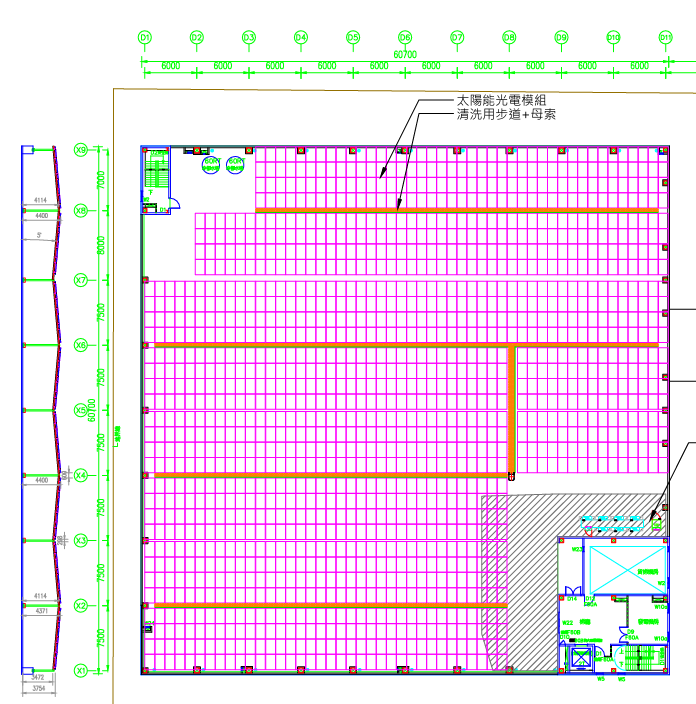
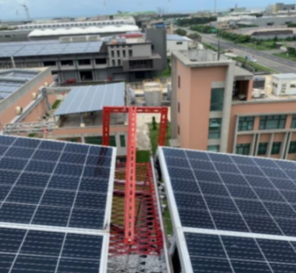
| 運轉年度 | 期初回購單價 (元/kW) | 回購複價總額 (元) | 當年度預估發電量 | 購回後自用年效益 ($5.8節電+$3綠憑=$8.8) |
購回後純節電年效益 (僅以$5.8/度計) |
顧問投資決策評註 |
|---|---|---|---|---|---|---|
| 第 1 年 | $59,670 | $46,229,034 | 989,737 度 | $8,709,683 | $5,740,475 | 首年含外線/MOF/線補沉沒成本，不建議立即買回 |
| 第 2 年 | $56,687 | $43,917,582 | 981,819 度 | $8,640,006 | $5,694,550 | 外線攤提初期，建議維持收租 |
| 第 3 年 | $53,703 | $41,606,131 | 973,964 度 | $8,570,886 | $5,648,991 | 3年內若欲自用，直接選方案二自建省1,267萬 |
| 第 4 年 | $50,720 | $39,294,679 | 966,173 度 | $8,502,319 | $5,603,803 | 已領4年租金約360萬 |
| 第 5 年 | $47,736 | $36,983,227 | 958,443 度 | $8,434,300 | $5,558,969 | 已領5年租金約448萬 |
| 第 6 年 | $44,753 | $34,671,776 | 950,776 度 | $8,366,826 | $5,514,501 | 單價逐步接近自建成本線 |
| 第 7 年 | $41,769 | $32,360,324 | 943,169 度 | $8,299,891 | $5,470,380 | ★ 單價正式低於自建單價 ($42,000/kW) |
| 第 8 年 | $38,786 | $30,048,872 | 935,624 度 | $8,233,492 | $5,426,619 | ★ 黃金回購甜蜜點起點（剩餘13年高效發電） |
| 第 9 年 | $35,802 | $27,737,420 | 928,139 度 | $8,167,624 | $5,383,206 | ★ 黃金回購甜蜜點（總價低於方案二自建總價） |
| 第 10 年 | $32,819 | $25,425,969 | 920,714 度 | $8,102,283 | $5,340,141 | ★ 黃金回購中點（前9年已領約826萬租金） |
| 第 11 年 | $29,835 | $23,114,517 | 913,348 度 | $8,037,465 | $5,297,418 | 注意：買回前須要求承租方完成逆變器健檢/保固移交 |
| 第 12 年 | $26,852 | $20,803,065 | 906,041 度 | $7,973,165 | $5,255,038 | 剩餘9年運轉期，約2.6年回本 |
| 第 13 年 | $23,868 | $18,491,614 | 898,793 度 | $7,909,380 | $5,212,999 | 剩餘8年運轉期，約2.3年回本 |
| 第 14 年 | $20,885 | $16,180,162 | 891,603 度 | $7,846,105 | $5,171,297 | 剩餘7年運轉期，約2.1年回本 |
| 第 15 年 | $17,901 | $13,868,710 | 884,470 度 | $7,783,336 | $5,129,926 | 剩餘6年運轉期，約1.8年回本 |
| 第 16 年 | $14,918 | $11,557,259 | 877,394 度 | $7,721,069 | $5,088,885 | 剩餘5年運轉期，約1.5年回本 |
| 第 17 年 | $11,934 | $9,245,807 | 870,375 度 | $7,659,301 | $5,048,175 | 剩餘4年運轉期，約1.2年回本 |
| 第 18 年 | $8,951 | $6,934,355 | 863,412 度 | $7,598,026 | $5,007,790 | 剩餘3年運轉期，當年度即近乎回本 |
| 第 19 年 | $5,967 | $4,622,903 | 856,505 度 | $7,537,242 | $4,967,729 | 合約尾聲，可視結構狀況決定買回或要求拆除 |
| 第 20 年 | $2,984 | $2,311,452 | 849,653 度 | $7,476,944 | $4,927,987 | 第20年期滿：依約定無償移轉或由建坤自費拆除復原 |
$59,670/kW（複價 4,623 萬）含 SPV 外線線補費、臨路 MOF 盤與融資開發沉沒成本，比方案二自建（$42,000/kW）高出 42%。若鉅鋼預計 3 年內買回，請直接選擇「方案二：鉅鋼自建」！
$38,786/kW 以下（第 10 年為 $32,819/kW、總價 2,543 萬），此時前 9 年已收租約 826 萬元，買回後尚有 11 年高效發電期（年效益約 810 萬），約 3.1 年即可回本！
| 項目 | 方案二（鉅鋼自建・高壓內併）明細 |
|---|---|
| 總裝置容量 | 612.320 kW（D棟 460.575 kW 有浪板 ＋ C棟屋突 151.745 kW） |
| 鉅鋼投資成本 | • 光電單價：$42,000 / kW（計 $25,717,440） • D 棟浪板鋪設：$7,000 / kW（計 $3,220,000） • 工程總價：$28,937,440 元（含 D 棟浪板鋪設） |
| 其他規費與預估費用 | 高壓審查費約 $85,000、加強電力網費用、台電線路設置費(線補費)、模組回收費約 $612,320 ($1,000/kW)、綠憑案場審查/評鑑費、水費、網路費等 |
| 20 年預估總發電量 | 14,510,953 度（首年 782,239 度，平均每日發電 3.5 小時） |
| 20 年綠電節費效益 | • 毛效益預估：$127,696,386 元（舊廠均價 $5.8/度 ＋ 綠憑 $3/度） • 扣全週期維運/換機/規費後淨賺：9,071 萬元（IRR 21.4%，4.4年回本） |
| 結構與空間配置重點 | • 棚架邊緣自女兒牆向內退縮 2 米（工安維護考量，免設外圍欄杆） • 棚架低點淨空間 3.4 ~ 3.8 米，山型陣列（東西向） • 保留既有紅柱、新增黑柱加強支撐；低壓設備放戶外、高壓盤放光電機房 |
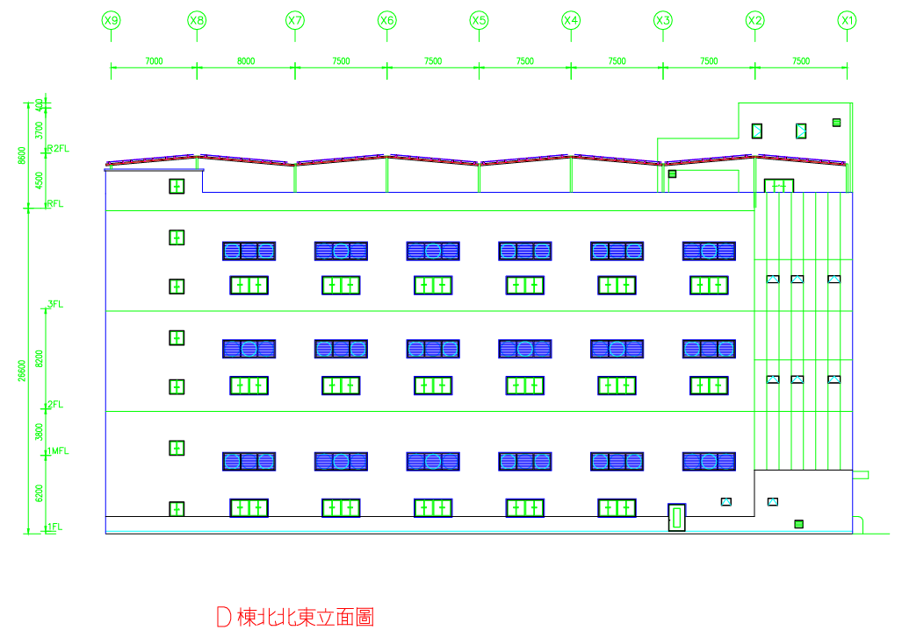
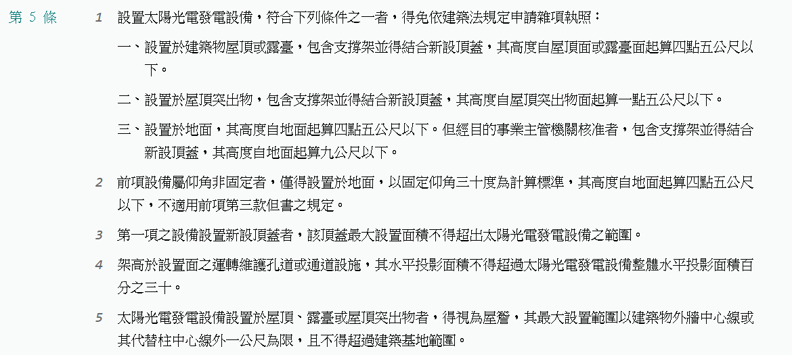
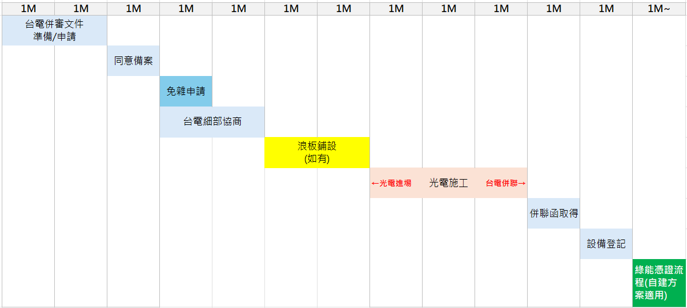
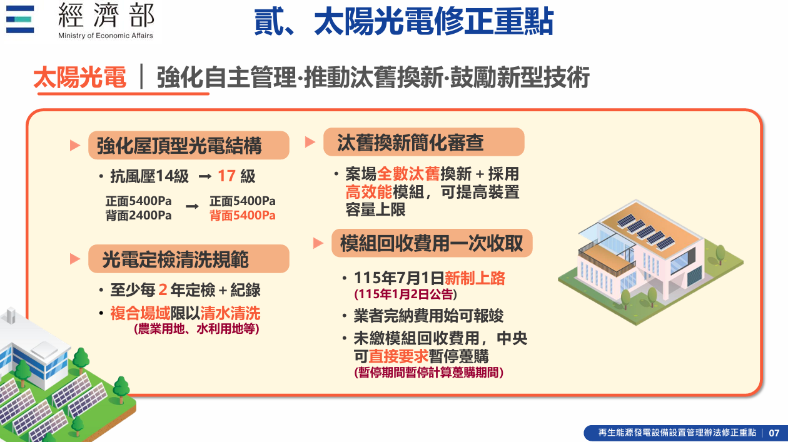
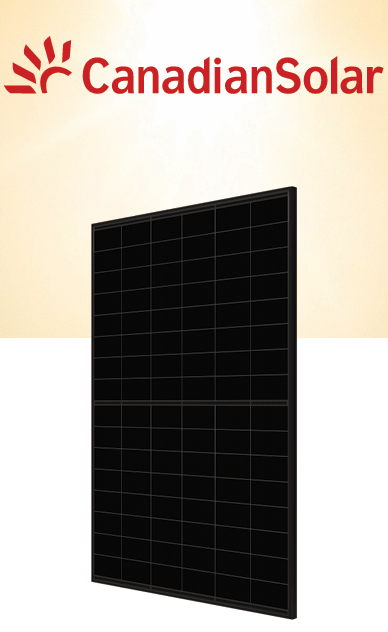
CS6.2-48TM-445W（泰國製造，國際 Tier-1 品牌）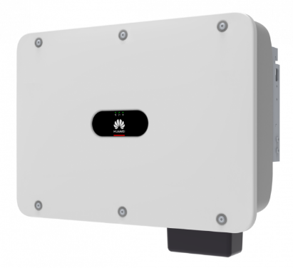
SUN2000-100KTL-M1 / 40KTL-M3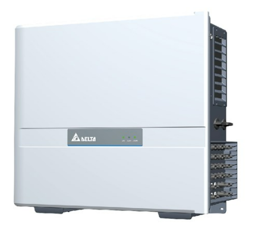
因為 C 棟露台若要架設高棚架（高度逾 4.5m 或作為露台頂蓋結構），必須正式請領建築雜項執照並檢討建蔽率與容積率：
| 評估項目 | 檢討結果與數據說明 |
|---|---|
| 【建蔽率】檢討 | 設置於既有屋頂／露臺之上，符合 <70% 規則，應可不必檢討建蔽率。 |
| 【容積率】致命瓶頸 | 全平台滿鋪原可達 185.12 kW；但台中建管處未給予放寬回覆，合法剩餘容積率僅 32 坪 → 僅能鋪設 17.6 kW！ |
| 20 年發電預估 (度) | 417,090 度（17.6 kW × 3.5h × 365天，20年總計僅 41.7 萬度） |
| 20 年發電毛效益 ($) | $3,670,392 元（以節電 $5.8 ＋ 綠憑 $3.0 ＝ $8.8/度估算之 20 年毛收入） |
| 建置與雜照成本結構 *(原簡報備忘錄揭露)* |
• 雜照申請費：約 $1,700,000 元（170 萬元！） • 高棚架光電工程費：約 $75,600/kW × 17.6kW ＝ $1,330,560 元 • 另加 20 年維運費、保險費、模組回收費 → 總成本超過 330 萬元！ |
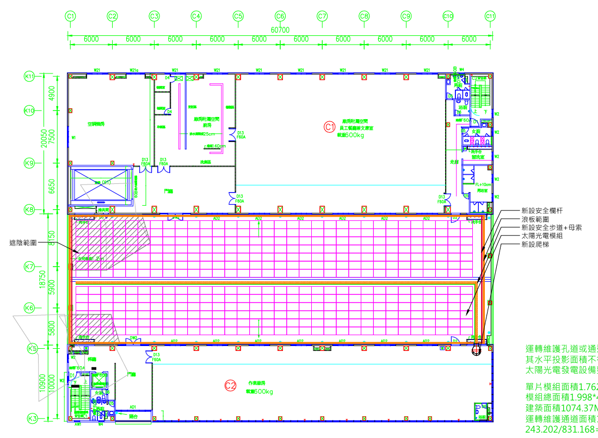
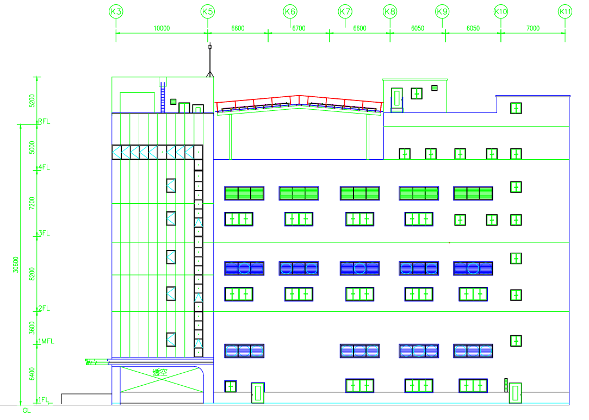
| 項目 | 方案一：出租分潤 | 方案二：鉅鋼自建 |
|---|---|---|
| 施作範圍 | D 棟主屋頂 ＋ C 棟兩處屋突（C1 為 94.785 kW，C2 為 56.96 kW，合計 151.745 kW 南向單斜矮棚架，兩方案 C 棟做法相同） | |
| 裝置容量 | 774.745 kW（D 棟 623 kW，無浪板） | 612.320 kW（D 棟 460.575 kW，有浪板，受 30% 法規限制） |
| 20 年發電量 | 1,836 萬度（18,360,153 度） | 1,451 萬度（14,510,953 度） |
| 鉅鋼出資 | 0 元 | 2,894 萬元（每 kW 42,000 元，浪板另計每 kW 7,000 元） |
| 回饋／效益 | 二選一：20% 售電收入（20年約 1,836 萬），或 20% 綠電（約 367 萬度） | 20 年節電加綠憑毛效益 1.277 億元（每度以 5.8 + 3 元計） |
| 併網與工期 | 高壓外併（臨路設 MOF 盤）｜約 7–8 個月 | 高壓內併｜約 9–10 個月 |
| 承租方與設備 | • 承租方：建坤能源（國泰金控持股 95%、進金生持股 5%，資本額 37 億） • 設備：模組用 CSI 445W（泰國製，效率 22.3%）；逆變器提供華為 SUN2000 和亞力 110/136kW 兩選項 • C 棟露台：合法容積只能裝 17.6 kW，光雜照申請費就要約 170 萬元，經濟效益不成立。 | |
| 疑問編號與核心爭點 | 我方顧問解答專頁與核心結論 |
|---|---|
| Q1：兩方案比較基準不一致 方案一綠電算5.8元、方案二算8.8元；1.277億未扣第6年後維運/換機/回收與折現；5.8元含基本電費；3元綠憑需剛需。 |
→ 詳見 P3-2：已建立統一基準 DCF 表！方案一綠電按 $8.8 重算達 3,231萬；方案二扣盡 804.5 萬成本後，淨回收期 4.4年 (IRR 21.4%) / 純節電 6.8年 (IRR 12.4%)。 |
| Q2：發電量假設與衰減率不一致 台中東西向山型 3.5h 偏樂觀需 PVsyst；表內年衰減 0.8% 但模組寫 <0.4%。 |
→ 詳見 P3-3：承諾交付 PVsyst 報告；0.4% 為組件衰減，表內用 0.8% 為「全系統綜合保守安全邊際」（少算 55 萬度保底）。 |
| Q3：回購機制偏貴且外併改自用存疑 首年回購 $59,670/kW 比自建貴 42%；外併躉售改內併自用程序與費用未交代。 |
→ 詳見 P3-3：首年含外線/MOF 沉沒成本，第 8~10 年 ($3.28~$3.88萬/kW) 方為黃金回購點；外併免改內線即可直接轉供綠電自用，或施工預留內併套管。 |
| Q4：D 棟容量落差與 30% 法規依據 623kW vs 460.575kW 差 162kW；為何方案一不受 30% 限制？黑柱與防水責任。 |
→ 詳見 P3-4：因方案二滿鋪浪板（新設頂蓋），未鋪模組浪板區計入維護通道須 ≤30% (實算 29.03%)；拿掉黑柱僅減 10.68kW；防水 100% 歸責保固。 |
| Q5：租金基準與棚架下空間權利不明 綠電 $5 分潤基準、有無保底？棚架下空間歸投資方限制業主；期滿拆遷未寫。 |
→ 詳見 P3-4：主動修訂合約：① 增設 FIT 保底租金 ② D棟棚架下空間使用權歸還鉅鋼 ③ 明訂期滿 60 天無條件自費拆除復原。 |
$5.8/度（計 2,130 萬），漏算每度 $3.0 綠憑價值。拉齊按 $8.8/度 計算後，方案一綠電回饋 20 年總值實為 3,231.4 萬元（NPV 5% = +2,039.4 萬元）！$600/kW/年 計，每年 $367,392，15 年共 551.1 萬元）$3,000/kW 提列，計 183.7 萬元）$1,000/kW，計 61.2 萬元）＋ ④ 高壓審查規費（8.5 萬元）。$5.85/度、非夏月半尖峰為 $5.47/度。考慮週休與基本電費影響，我們將日間實質抵減之流動電價做 -10% 保守壓力測試（$5.22/度） 與 +10% 電價上調測試（$6.38/度）。| 方案與評估情境 (統一折現率 WACC = 5%) | 20年營運淨入 | 扣CAPEX淨賺 | 真實回收期 | 專案 IRR | 淨現值 NPV(5%) |
|---|---|---|---|---|---|
| 【方案一 A】出租：20% 售電現金租金 ($5/度×20%) | 1,836.0 萬 | +1,836.0 萬 | 0出資即刻正現金 | ∞ (0出資) | +1,158.7 萬 |
| 【方案一 B】出租：20% 綠電回饋 (純節電 $5.8/度) | 2,129.8 萬 | +2,129.8 萬 | 0出資即刻正現金 | ∞ (0出資) | +1,344.1 萬 |
| 【方案一 C】出租：20% 綠電回饋 (同基準 $8.8/度) | 3,231.4 萬 | +3,231.4 萬 | 0出資即刻正現金 | ∞ (0出資) | +2,039.4 萬 |
| 【方案二】原簡報毛效益 ($8.8/度，未扣維運換機) | 12,769.6 萬 | +9,875.9 萬 | 4.2 ~ 4.3 年 | 22.6% | +5,165.4 萬 |
| ★【方案二】含綠憑淨效益 ($8.8/度，扣全週期成本) | 12,034.9 萬 | +9,071.4 萬 | 4.4 年 | 21.4% | +4,689.5 萬 |
| 【方案二】含綠憑淨效益 (電價 -10% 保守：$7.92/度) | 10,757.9 萬 | +7,794.4 萬 | 4.9 年 | 18.9% | +3,883.6 萬 |
| 【方案二】含綠憑淨效益 (電價 +10% 樂觀：$9.68/度) | 13,311.8 萬 | +10,348.3 萬 | 4.0 年 | 23.9% | +5,495.4 萬 |
| ★【方案二】純節電淨效益 ($5.8/度，無綠憑剛需) | 7,681.6 萬 | +4,718.1 萬 | 6.8 年 (毛6.4年) | 12.4% | +1,942.1 萬 |
| 【方案二】純節電淨效益 (日間流動 -10%：$5.22/度) | 6,839.9 萬 | +3,876.5 萬 | 7.7 年 | 10.5% | +1,410.9 萬 |
| 【方案二】純節電淨效益 (電價上調 +10%：$6.38/度) | 8,523.2 萬 | +5,559.7 萬 | 6.1 年 | 14.2% | +2,473.2 萬 |
| 顧問質疑點 | 進能服技術顧問實證解答与承諾 |
|---|---|
| 1. 東西向山型陣列在台中每天 3.5 小時偏樂觀，需 PVsyst 支撐？ | • 氣象與傾角實算：台中市西屯區長年日射量約 4.15~4.30 kWh/m²/d。D 棟採 5° 低傾角東西向山型陣列（降低風壓並最大化面積利用率），方位角折減僅約 3.2%~3.5%（遠低於高傾角東西向之折減）。• N-Type 弱光增益：搭配 CSI 445W TOPCon 模組（效率 22.3%），首年 PR 值約 82.5%~84%，折算等效日照約 3.45~3.52 小時/日。• 交付承諾：於細部設計階段正式提交 PVsyst 模擬報告（含 3D 女兒牆與屋突遮陰建模）作為合約附件。 |
| 2. 表內衰減率約 0.8%/年，但模組規格寫 <0.4%/年，前後不一致？ | • 這是刻意的「工程保守安全邊際 (Conservative Buffer)」！ • 模組規格書之「首年 <1%、次年起 <0.4%/年」為實驗室下之單純太陽能板功率衰減 (Module Degradation)。 • 財務表採用 0.8%/年 幾何遞減（如方案一首年 989,737 度 → 第 2 年 981,819 度，981,819 / 989,737 = 99.2%），是將 20 年間之直交流線損微增、接頭阻抗、逆變器老化與清洗週期間落塵折減一併納入「全系統綜合衰減率」。• 若單按 0.4% 計算，方案二 20 年發電量將達 1,506 萬度（多出 55 萬度、多賺 484 萬）。我們堅持用 0.8% 保守試算，確保董事長看到的數字「只會超額達標、絕不誇大灌水」！ |
| 顧問質疑點 | 商務結構拆解與工程轉自用雙路徑解方 |
|---|---|
| 1. 第 1 年回購單價 $59,670/kW 比自建 $42,000/kW 高約 42%？ | • 成本結構差異：方案一為「高壓外併 SPV 統包投資」，建坤能源初期除支付光電工程外，還全額承擔了台電外線線補費、加強電力網費、臨路 MOF 盤建置、高壓外併專線、SPV 專案融資安排費、綠憑評鑑費與前 20 年風險溢價。 • 顧問良心建議：前 3 年回購單價（$53,703~$59,670/kW）確實對業主不利！若鉅鋼計畫 3 年內擁有電廠，應直接選「方案二：自建 ($42,000/kW)」；中途回購權是為「第 8~10 年後（單價降至 $32,819~$38,786/kW）」才爆發綠電剛需所設計的贖回選擇權。 |
| 2. 原本是高壓外併，買回後如何改成「自用、每度 $8.8 元」？時程與費用？ | 提供兩條明確可行的法定與工程路徑（寫入租約附約）： • 路徑 A（最推薦・免動外線 0 工程費）：維持高壓外併，採「同企業電號綠電轉供 (CPPA 自用轉供)」。因為本案原本即規劃走綠電憑證交易（非綁死不可解約之台電傳統 FIT 躉售），鉅鋼買回電廠後，無須拆除臨路 MOF 盤或重拉內線，直接經由台電電網轉供予鉅鋼廠區電號（時程約 2~3 個月行政變更，僅需台電轉供輸配電規費約 $0.1~0.3/度），即可 100% 取得綠電憑證並抵減流動電費！ • 路徑 B（實體改接高壓內併）：若欲解除外線改接廠內高壓受電盤，須向台電申辦「併聯型態變更」並由 D 棟頂樓光電機房改拉高壓電纜至廠內變電站（時程約 4~6 個月，工程與審查費約 150~200 萬元）。我方承諾於 D 棟施工時預留內併管路，確保未來無痛切換！ |
| 顧問疑問細項 | 建築法規依據與工程簽證解答 |
|---|---|
| 1. 為何方案一 (623kW) 不受 30% 限制，方案二 (460.575kW) 卻受限？加浪板還符合免雜照嗎？ | • 法源依據：《設置再生能源設施免請領雜項執照標準》第 5 條第 1、3、4 項明訂：屋頂型高度 4.5m 以下「得結合新設頂蓋（即浪板）」免請領雜照，但「架高於設置面之運轉維護孔道或通道設施，其水平投影面積不得超過光電設備整體水平投影面積 30%」。 • 為何兩案差 162 kW？ ① 方案一（無浪板）：未鋪模組處為原 RC 屋頂露空面，無新設頂蓋，故貼齊女兒牆滿鋪 1,400 片 = 623 kW。 ② 方案二（滿鋪浪板 2,668.23 m² ＋ 模組退縮 2 米）：因退縮 2 米區下方仍有鋪浪板，建管審查將「有浪板但上方無模組」之面積（ 600.3 m²）全數計入維護通道！為符合 600.3 ÷ 2,067.93 = 29.03% ≤ 30%，模組面積須為 2,067.93 m² (1,035片 = 460.575 kW)。• ★ 增容突破口：若董事長希望方案二自建也衝上 580~600 kW，只需將「浪板邊緣隨模組同步退縮 2 米」，即可解除 600.3 m² 通道限制！ |
| 2. 新增黑色立柱、植筋與屋頂防水責任劃分？拿掉黑柱減多少？ | • 黑色立柱彈性：增設黑柱係為分擔大跨距風載（17級風壓 5,400Pa）；若鉅鋼考量棚架下動線決定「不加黑色立柱」，容量僅需微減 10.68 kW（24片模組），完全可行！ • 簽證與防水保固：全案由開業結構技師出具結構安全簽證；植筋處採化學錨栓＋無收縮水泥基座＋PU防水層＋金屬防水罩，合約明訂施工植筋處滲漏水由我方負 100% 修繕與賠償責任。 |
針對顧問指出原簡報在租約條款上的三處不明確，進能服與建坤能源主動提出「保護鉅鋼權益之三大合約修訂承諾」：
| 條款項目 | 原簡報潛在疑慮 | 本次主動升級之「董事長安心合約條款」 |
|---|---|---|
| 1. 租金分潤基準與保底機制 | 20% 分潤以「綠電 $5/度」估算，實際是 FIT 還是轉供？有無保底？ | 明訂「FIT 保底 ＋ 綠電轉供上行共享」雙軌制： • 未轉供期間或保底基準：按台電公告高壓屋頂型 FIT 費率（115年為 $3.6236/度）× 20% 計算保底租金。• 綠電 CPPA 轉供期間：按實際售電單價（市價約 $5.0~$5.5/度）× 20% 結算，公開透明對帳！ |
| 2. D 棟棚架下空間使用權利 | P.6 寫「棚架下空間歸投資方所用」，限制鉅鋼使用自家屋頂。 | 全面修正！空間使用權歸還鉅鋼機械： • 合約改為：「D 棟高棚架下淨高 3.4~4.2m 空間歸鉅鋼機械無償使用（可作半戶外倉儲、設備區），惟不得違法封閉四周外牆（避免觸犯違建撤照）或堆置危險易燃物，並保留投資方必要配電箱與維運通行權。」 |
| 3. 20 年期滿拆除復原與屋頂修繕 | 到期怎麼拆除復原、屋頂修繕期間怎麼補償未寫。 | 白紙黑字寫入租約主文： • 期滿復原：20 年到期若不留用，建坤能源（37億資本額）須於 60 日內全額自費拆除設備並完成屋頂防水復原（且已依法預繳 $1,000/kW 政府模組回收基金）。 • 修繕免責：租期內鉅鋼因屋頂修繕需配合停機，每年享有約定免責日數，免賠售電損失。 |
高層決策三大檢核點：① 帳上可否動用 2,900 萬資本支出（或保留給本業）？② 鉅鋼是否為用電大戶或有歐美客戶綠電要求？③ 同基準 NPV/IRR 與電價 ±10% 敏感度表現。
| 決策情境條件 | 顧問推薦拍板方案 | 核心財務與戰略理由 |
|---|---|---|
| 情境 A（首推）： 本業資金充裕，或願搭配銀行綠能專案貸款 (75%~80%)；且未來 3~5 年有減碳/綠憑需求 |
★ 拍板【方案二：鉅鋼自建】 (612.32 kW，總價 2,894 萬；若貸款 8 成自備僅約 580 萬) |
• 含綠憑 ($8.8)：淨 IRR 21.4%、回收期 4.4 年、NPV +4,690 萬。 • 純節電 ($5.8)：淨 IRR 12.4%、回收期 6.8 年、NPV +1,942 萬。 • 電價每漲 10%，自建 IRR 再增約 2 個百分點，是抗通膨與能源漲價的最佳盾牌！ |
| 情境 B： 2,900 萬預算須 100% 投入核心製鞋機械研發擴產，嚴控非本業 CAPEX |
拍板【方案一：出租分潤】 (774.745 kW，鉅鋼 0 出資，建坤能源全額投資) |
• 零資本支出、零維運責任、零台電外線風險。 • 20 年穩收 1,836 萬租金 (NPV +1,159萬) 或 367萬度綠電 (同基準價值 3,231萬，NPV +2,039萬)，並保有第 8~10 年中途購回權。 |
高層決策檢核點：選方案一時，分潤要選「20% 租金」還是「20% 綠電回饋」？「綠電優先回購權」的價格和條件怎麼寫進合約？
| 綠電策略階段 | 建議採購拍板動作与合約條款設計 |
|---|---|
| 1. 分潤二選一怎麼選？ (取決於未來 3~5 年綠電剛需) |
• 若未來 3 年內已有 RE100/減碳指標：直接選「20% 綠電回饋」（每年免費取得約 18.4 萬度綠電＋T-REC 憑證，每度抵減 $5.8 電費＋$3 憑證價值＝實質價值 $1.76/度，比收現金租金 $1.0/度 高出 76%！）。 • 若目前尚無綠電剛需：先選「20% 售電現金租金」，但於合約增訂「年度分潤模式轉換權」——鉅鋼得於每年底提前 60 天通知，自次年起由「收現金租金」無償切換為「領取 20% 綠電回饋」！ |
| 2. 「綠電優先回購權 (ROFR)」如何寫入合約？ | 不能只寫「享優先回購權」五個空泛字！建議於合約明訂三大具體執行條件： ① 回購額度：除 20% 分潤外，建坤能源所持有之其餘 80% 綠電與憑證（約 73 萬度/年），鉅鋼享有第一順位優先承購權。 ② 定價公式：回購單價以「當時經濟部國家再生能源憑證中心公告之 CPPA 市場均價折讓 3%~5%」或「約定價格區間上限（Cap Price）」計算。 ③ 觸發窗口：每滿 3 年或當原外部購電合約到期前 6 個月，建坤須書面通知鉅鋼是否行使優先回購權。 |
D 棟棚架淨高 3.4～4.2 米，面積逾 800 坪。請董事長先拍板頂樓用途，工程配置即刻定案：
| D 棟棚架下空間規劃用途 | 是否加鋪浪板 ($7,000/kW，約322萬) | 是否保留新增黑色立柱 (影響容量 10.68 kW) | 建議搭配方案與空間條款 |
|---|---|---|---|
| 用途 A：半戶外倉儲區、模具/設備暫置區或員工休憩區 (需百分之百防雨且動線寬敞) |
必加浪板！ 全面防雨阻熱，退縮 2 米免設外圍防墜欄杆 |
建議拿掉黑色立柱！ 僅少 10.68 kW (24片)，換取全跨距無立柱阻礙之寬敞倉儲動線 |
• 選方案二自建 (約 449.9 kW) • 若選方案一出租加浪板，必須刪除「空間歸投資方」條款，明訂棚架下空間歸鉅鋼使用 |
| 用途 B：頂樓純閒置無人員物料進出，僅需幫頂樓廠房降溫 | 不加浪板！ 直接省下 322 萬浪板成本，太陽能板本身已遮蔽 75% 日照降溫 3~5°C |
保留黑色立柱！ 強化 17 級抗風壓結構剛性，發電容量最大化 |
• 不論自建或出租，D 棟皆可滿鋪至 623 kW（全場達 774.745 kW），20 年多發 385 萬度電！ |
| 評估維度 | 海外品牌：華為 SUN2000 (100KTL/40KTL) | ★ 國內品牌（推薦）：亞力電機 (110/136 kW) |
|---|---|---|
| 資安合規性 (監控連外網) |
陸系通訊晶片背景，若鉅鋼廠內有國防、歐美機敏客戶稽核或政府補助案，外網連線易遭資安質疑。 | 100% 台灣上市重電大廠（股票 1514）本土製造，符合政府與歐美大廠最高資安規範，廠區內外網隔離最安心！ |
| MPPT 與規格 | 10 路 MPPT、內建 AFCI 直流拉弧檢測與 PID 修復、IP66。 | 同級最高 12 組 MPPT / 24 串輸入、內建各串電流實時量測（利於 UNSW 組串故障診斷）、滿載不降載、IP66。 |
| 保固與在地備品 | 透過台灣代理商出保，部分核心板件需跨國調撥。 | 台灣原廠直營服務、在地備品充足，配合進能服全台維運據點，完修速度最快。 |
| 合約保障維度 | 寫入正式合約之具體條款內容（白紙黑字保障鉅鋼） |
|---|---|
| 1. 維運 SLA 與發電保證 | • 將簡報 P.30 承諾之 「接獲異常通報後 2 個工作天內現場查檢、5 個工作天內完成案場修復」 正式寫入合約 SLA 條款。 • 若為方案二自建維運合約，增訂 「系統年可用率 (Availability) ≥ 98% / PR 值保證」，未達標按比例扣減維運費。 |
| 2. 屋頂漏水責任歸屬 | • 施工進場前雙方會勘進行屋頂現況拍照存證與積水測試。 • 凡因光電棚架植筋、管線穿牆或施工人員作業所致之屋頂滲漏水，於合約期間內由進能服／建坤能源負 100% 無償修繕與廠內設備受損連帶賠償責任。 |
| 3. 20 年租約退出與回購公式 | • 中途回購權：載明 1~20 年期初直線折舊回購單價表（第 8~10 年為 $38,786~$32,819/kW），期中按日數比例計算。 • 違約與不可抗力退出：若因承租方破產或重大違約，鉅鋼有權終止租約並無償取得設備或要求限期拆除。 |
| 4. 期滿拆除復原與 C 棟露台決策 | • 20 年期滿拆遷：租期屆滿若鉅鋼不續租亦不無償留用，建坤能源須於 60 日內全額自費拆除全部設備、切平植筋並復原防水層。 • C 棟露台直接剔除：170 萬雜照費換 17.6 kW 完全不符經濟效益，當場拍板不做！ |
會議現場僅需請董事長確認以下 5 項勾選，設計與法務團隊即可於 3 個工作天內產出定案合約與細設圖面：
| 決策序號 | 採購決策題目 | 顧問推薦首選 (Recommended) | 備選方案 |
|---|---|---|---|
| 決策 1 | 商業與出資模式 | ☑ 方案二：鉅鋼自建 (可搭銀行 8 成綠能融資，享 IRR 21.4% / 12.4%) | ☐ 方案一：出租予建坤能源 (0出資) |
| 決策 2 | 綠電與分潤用途 | ☑ 自建自用＋綠憑保留/出售 (若出租則前3年收租＋綁定 ROFR 優先回購權) | ☐ 出租直接領取 20% 綠電度數回饋 |
| 決策 3 | D 棟頂樓空間配置 | ☑ 加鋪浪板＋退縮 2 米免欄杆＋不落黑柱 (449.9kW，空間歸鉅鋼倉儲用) | ☐ 無浪板滿鋪 623 kW (省 322 萬浪板費) |
| 決策 4 | 逆變器與模組品牌 | ☑ 亞力電機 110/136kW (本土零資安風險) ＋ CSI 445W (同級或更優入約) | ☐ 華為 SUN2000-100KTL/40KTL |
| 決策 5 | C 棟露台 (17.6kW) | ☑ 直接拍板剔除不施作！（立省 170 萬元雜照申請費與高昂棚架成本） | |
業務／設計／採購／專管／監工／環安衛／維運全數為正式編制團隊，不層層轉包，工程品質與進度可控。
高達 50% 科學園區及工業區覆蓋率，工程管理與高空防墜完全符合一線科技大廠與跨國企業工安標準。
全台首家 IPO 上櫃光電 EPC，實收資本額 5.88 億元，通過 ISO 9001 / 14001 / 45001 國際三認證，20 年履約最安心。
累積逾 348 座光電案場 (750 MW)，全台首家獲德國萊因 TÜV AAA 最高等級維運肯定，連續榮獲 2020~2025 國家金質獎。
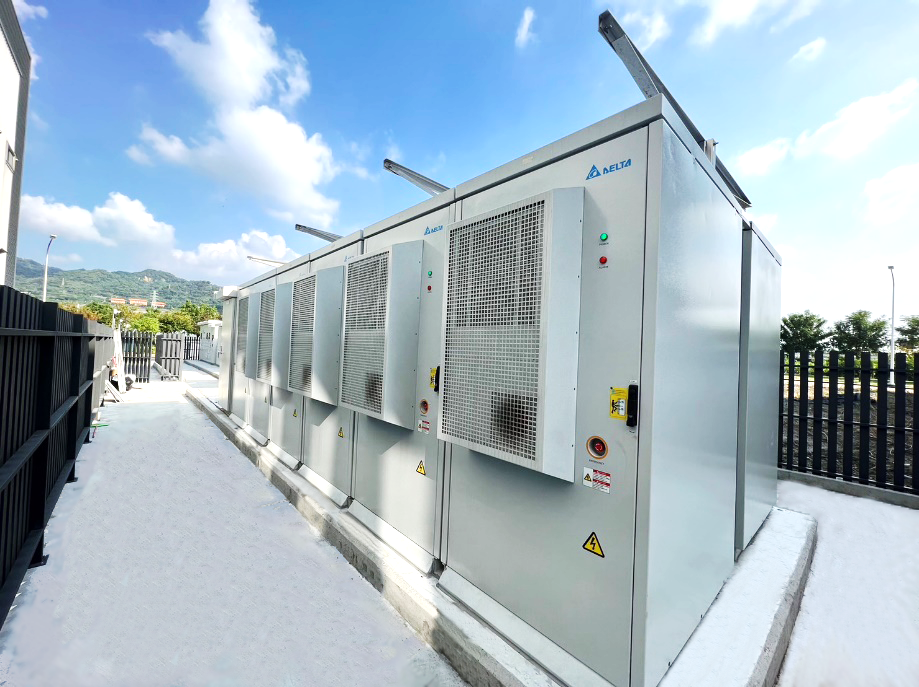
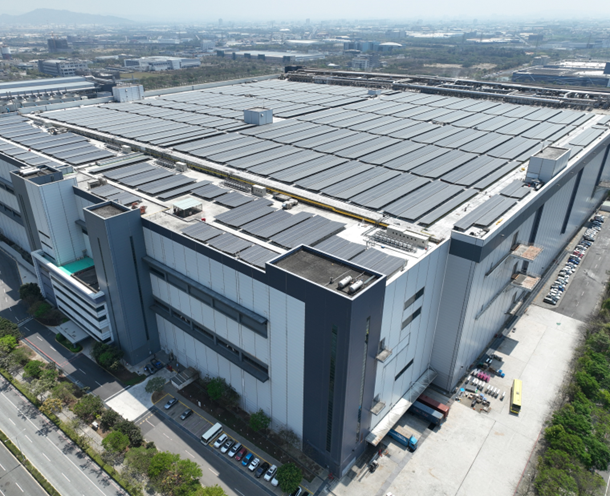
• 專案挑戰與成果：多案場整合、大容量建置、科技廠與南科管理局工安要求極度嚴格；進能服團隊如期併聯，協助業主超前 2 年達標用電大戶建置義務，大幅提升 ESG 國際形象！
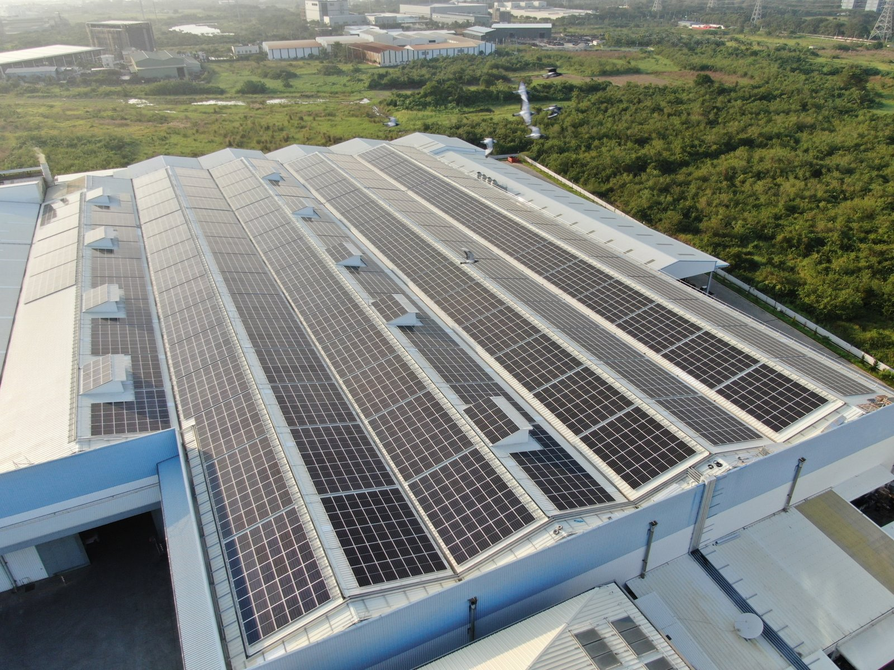
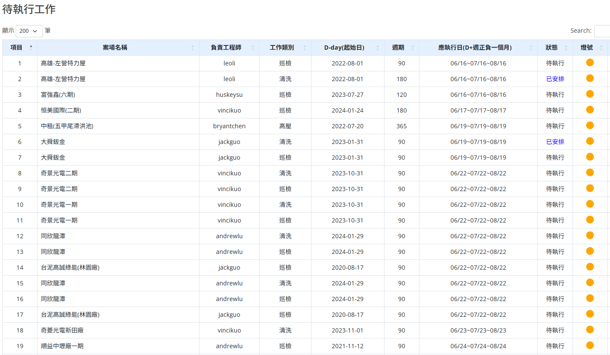
德國萊因 TÜV Rheinland 集團成立於 1872 年，為國際最權威之獨立第三方驗證機構。進能服為全台首家通過新版 TÜV AAA 最高等級維運認證 之光電服務商！
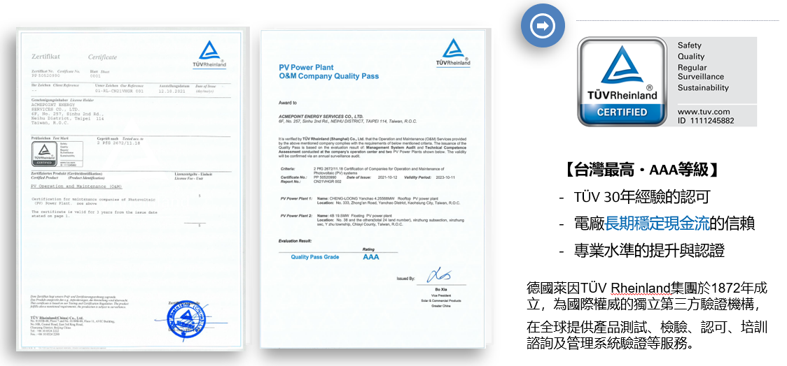